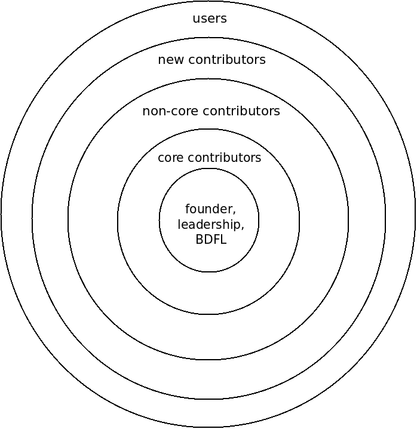

class: center, middle # CSCI 395.86 Open Source Software Development <br> ## Anatomy of a FOSS Project .author[ Stewart Weiss <br> ] .license[ Copyright 2020 Stewart Weiss. This work is derived from slides written by Joanna Klukowska, released under a [CC BY 4.0](https://creativecommons.org/licenses/by/4.0/) license,<br> which may be found at https://joannakl.github.io/ossd_s20/slides/anatomy_project.html.<br> This work is released under a [Creative Commons Attribution-ShareAlike 4.0 International License](https://creativecommons.org/licenses/by/4.0/). ] --- ## Elements of a FOSS Project ### (or what you should pay special attention to) - The community and its structure - Files with information and guidance - Tools - Issue tracker - Communication channels --- ## Community and Its Structure: The Onion Model .left-column2-large[ .center[  ] ] .right-column2-small[ .small[ (1) Walt Scacchi. Role Migration and Advancement Processes in OSSD Projects: A Comparative Case Study. 29th International Conference on Software Engineering (ICSE’07). 2007, [PDF](https://www.ics.uci.edu/~wscacchi/Papers/New/Jensen-Scacchi-ICSE-2007.pdf) (2) Y. Ye and K. Kishida. Towards an Understanding of the Motivation of Open Source Software Developers. 25th International Confererence on Software Engineering (ICSE’03). 419-429, 2003. [Web](https://dl.acm.org/doi/10.5555/776816.776867) ] ] --- ## The Onion Model .left-column2[ __Center__ - Founder(s) - the person(s) who started the project; they may or may not be involved in the leadership and decision making - BDFL = _Benevolent Dictator For Life_ - General leadership - group of people making decisions about direction of the project (generally based on the community feedback) __Core Contributors__ - Most senior and experienced people in the project - Provide guidance and mentorship to the newer community members - Hold the _commit bit_ - they are able to approve changes made to the project ] .right-column2[ __Non-core contributors__ - Make regular contributions - Active in issue discussions - Provide feedback to the newer members of the community __New contributors__ - People interested in contributing to the project - Still learning the structure of the project and how to interact with the community __Users__ - People who use the project ] --- ## Important Files - `README` - `LICENSE` (and/or `COPYING`) - `CONTRIBUTING` - `CODE OF CONDUCT` - Style Guides - Other - `INSTALL` / `INSTALLATION` - `CHANGES` / `CHANGELOG` - `AUTHORS` - `CONTRIBUTOR LICENSE AGREEMENT` (or alternatively `DEVELOPER CERTIFICATE OF ORIGIN`) - Other documentation: tutorials, walkthroughs, manuals, governance policies, especially on bigger projects. --- ## Tools: Issue Tracking __Issue Tracker__ also called __Bug Tracker__ also called __Ticketing System__ - The _place_ where the project tracks issues related to the project - What is the issue tracker used for? - feature requests - feature suggestions - bugs / problems discovered with the code or documentation - improvement suggestions - support questions - discussions about project design - team discussions - How should _you_ use the issue tracker? -- - The way the project community uses it! - Study existing issues (both open and closed), to learn how the community uses the issue tracker - If there is documentation about how to use the issue tracker, study it - Follow what you learned above in your own use of the issue tracker for that project --- ## Tools: Communication Channels Communication channels fall into three different categories: -- - __Asynchronous__ channels (parties do not need to be connected at the same time) - Examples: Discussion forums, mailing lists, issue trackers -- - __Synchronous__ (parties must all be connected at the same time) - Examples: Conference calls, video-conferencing, live meetings, meet-ups -- - __Partly asynchronous__ channels (provide both synchronous and asynchronous modes) - Examples: Real-time Chat (IRC[1], Mattermost[2], Rocketchat[3], Slack[4], ... ) .footnote[ 1 IRC is the acronym for Internet Relay Chat. See https://en.wikipedia.org/wiki/Internet_Relay_Chat<br> 2 https://mattermost.org/<br> 3 https://rocket.chat/<br> 4 https://slack.com/ ] --- ## Other Tools - Other tools depend on the project itself - You need to make sure that you are familiar with (or are willing to learn / have time to learn) the tools that the project uses. --- ## Sources 1. VM Brasseur, _Forge Your Future with Open Source_, The Pragmatic Programmers, LLC. 2018. 2. https://opensource.guide/how-to-contribute/#finding-a-project-to-contribute-to ---